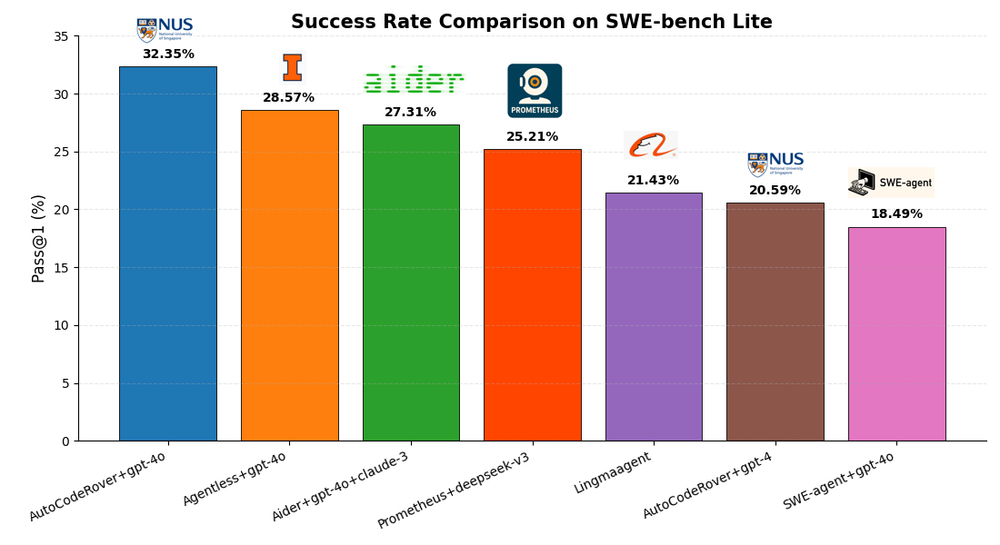
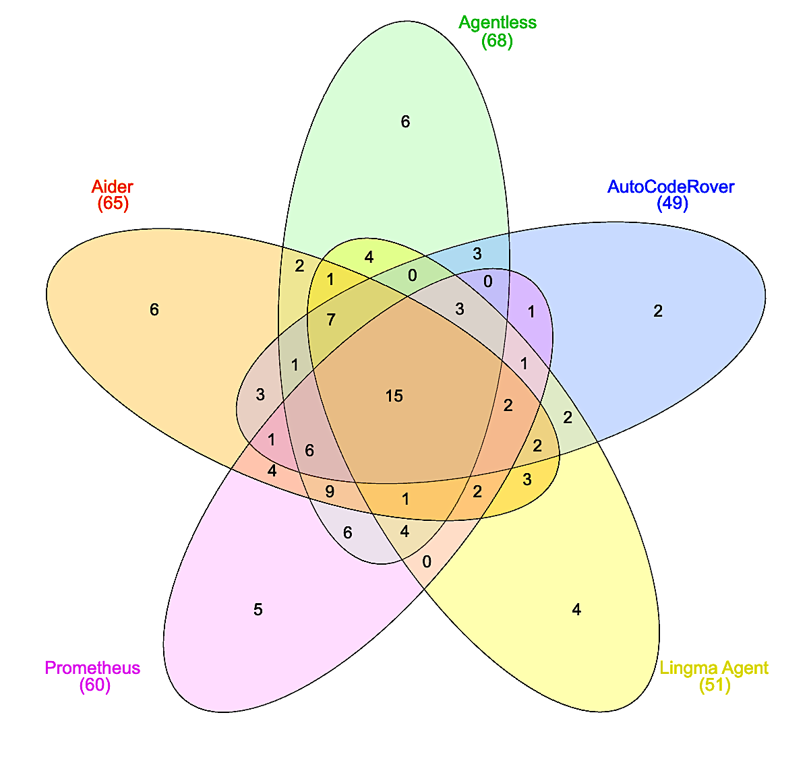

Abstract
We present Prometheus, a system that transforms an entire code repository into a unified knowledge graph to support software engineering tasks such as bug fixing, issue resolution, and agent-based development.
Large Language Models (LLMs) often struggle with limited context windows and lack structured understanding of large codebases. Prometheus addresses this by encoding the repository—including files, abstract syntax trees, and natural language text—into an interconnected graph of typed nodes and edges, persisted in Neo4j for scalable storage, traversal, and reasoning.
Prometheus enables a multi-agent architecture where specialized agents collaborate to reproduce issues, infer repair intents, generate patches, and validate fixes. For instance, one agent automatically configures builds to reproduce bugs, while others query the graph for relevant context or validate generated patches through testing.
Our key contribution is a reusable and extensible infrastructure for agentic workflows. Software tasks such as GitHub issue resolution are modeled as subgraphs, empowering agents to operate within the full structure of real-world repositories. Evaluated on SWE-bench Lite, Prometheus achieves a 25.12% resolution rate, demonstrating its effectiveness in autonomous software maintenance.
Prometheus Workflow

Prometheus Architecture Overview
Evaluation on SWE-bench Lite
We evaluate Prometheus and baseline agents on the SWE-bench Lite benchmark to compare success rates and solution overlaps.
